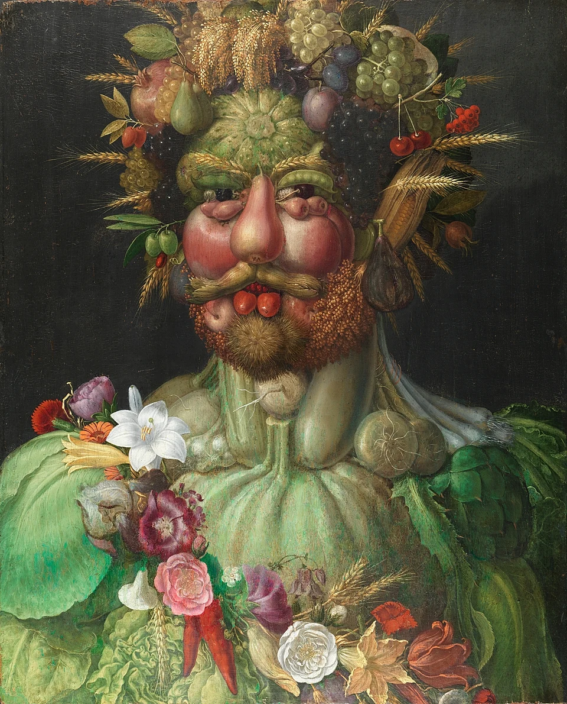

About the artist

Giuseppe Arcimboldo ( – ) was an Italian Mannerist painter best known for creating imaginative portraits in the shapes of human heads, though composed entirely of objects such as fruits, vegetables, flowers, fish and books.
In , he became court portraitist to Ferdinand I at the Habsburg court in Vienna, and would hold the position under Maximilian II and Rudolf II at the court in Prague. His conventional work on religious subjects has fallen into oblivion, but his portraits of human heads made up of vegetables, plants, fruits, sea creatures and tree roots were greatly admired by his contemporaries and remain a source of fascination today.
His works were rediscovered in the early 20th century by Surrealist artists such as Salvador Dalí.